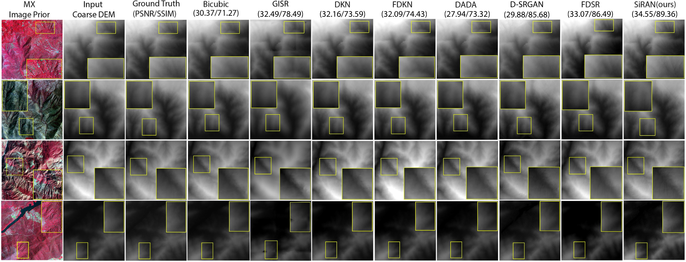
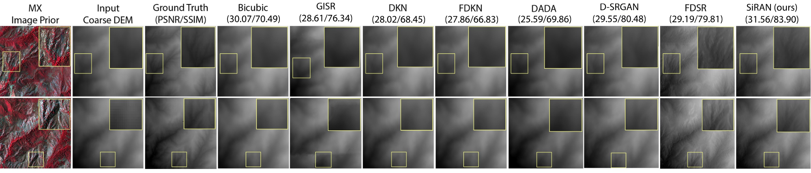
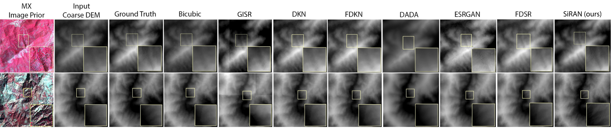
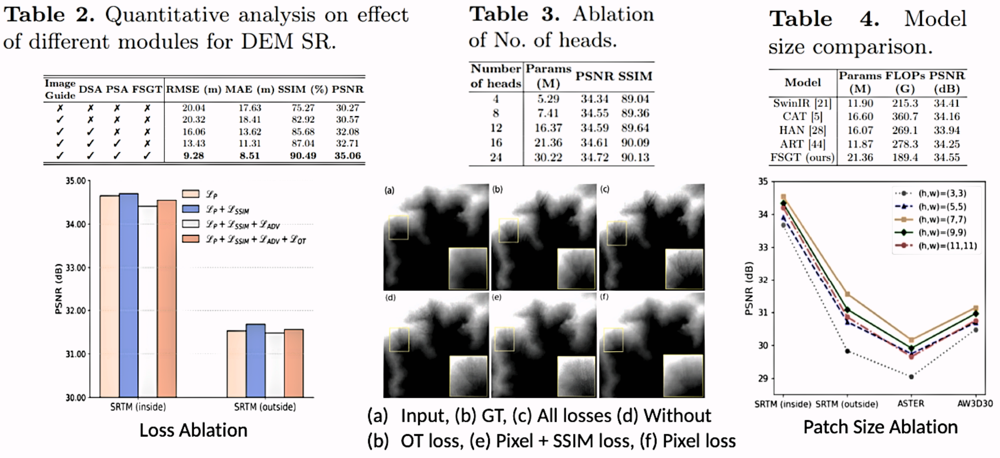
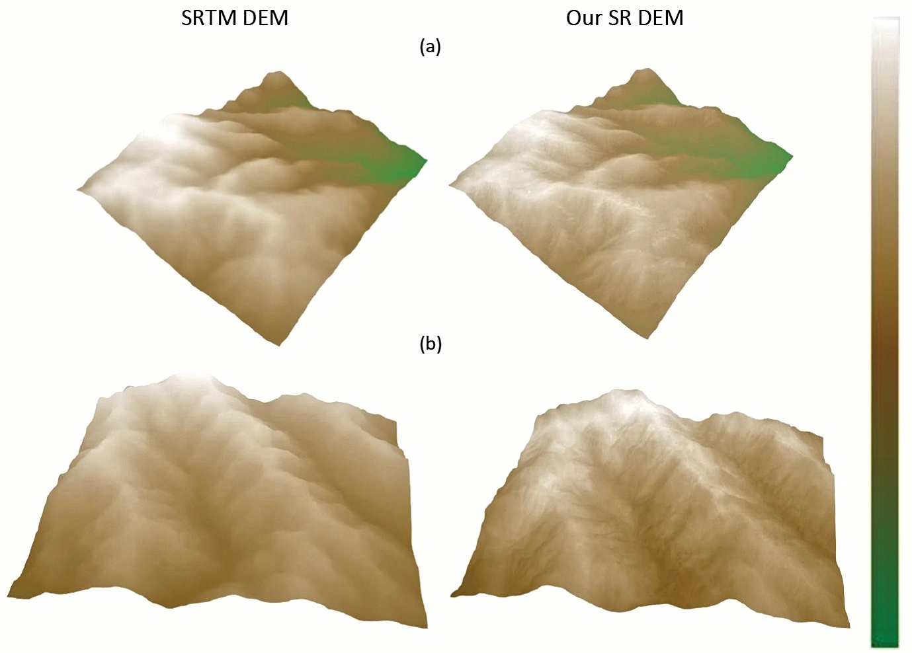

A Sinkhorn Regularized Adversarial Network for
Image Guided DEM Super-resolution using
Frequency Selective Hybrid Graph Transformer
Subhajit Paul, Ashutosh Gupta
Space Applications Centre (SAC), ISRO
DEM or Digital Elevation Model is a three dimensional model that represents
elevation of surfaces in digital format. Trditionally, DEMs are generated
from a pair of stereo images with photogrammetric techniques. High-resolution (HR)
DEMs have huge significance multiple applications like disaster planning and
city modellling. Therefore, here we focus on real world DEM SR under the guidance
of HR multi-spectral (MX) satellite image.
Abstract
Digital Elevation Model (DEM) is an essential aspect in the
remote sensing (RS) domain to analyze various applications related to
surface elevations. Here, we address the generation of high-resolution
(HR) DEMs using HR multi-spectral (MX) satellite imagery as a guide
by introducing a novel hybrid transformer model consisting of Densely
connected Multi-Residual Block (DMRB) and multi-headed Frequency
Selective Graph Attention (M-FSGA).To promptly regulate this process,
we utilize the notion of discriminator spatial maps as the conditional
attention to the MX guide. Further, we present a novel adversarial ob-
jective related to optimizing Sinkhorn distance with classical GAN. In
this regard, we provide both theoretical and empirical substantiation of
better performance in terms of vanishing gradient issues and numerical
convergence. Based on our experiments on 4 different DEM datasets, we
demonstrate both qualitative and quantitative comparisons with avail-
able baseline methods and show that the performance of our proposed
model is superior to others with sharper details and minimal errors.
Contributions
1. We propose a novel architecture for DEM SR based on a hybrid transformer block consisting of a Densely connected Multi-Residual Block (DMRB) and multi-headed Frequency Selective Graph Attention (M-FSGA), which effectively utilizes information from an HR MX image as a guide by conditioning it with a discriminative spatial self-attention (DSA).
2. We develop and demonstrate SiRAN, a framework based on Sinkhorn regularized adversarial learning. We provide theoretical and empirical justification for its effectiveness in resolving the vanishing gradient issue while leveraging tighter iteration complexity.
3. Here, we focus on performing SR for real-world low-resolution (LR) DEM. Hence, we generate our own dataset where we take realistic coarse resolution data instead of considering bicubic downsampled HR image as input.
4. We perform experiments to assess the performance of our model along with ablation studies to show the impact of the different configuration choices.
Result on test dataset (Inside India Samples)

Above comparison show DEM SR performance on our generated test dataset
which corresponds to Indian subcontinent region. As our work is first
of its kind in literature, we compare our method with guided monocular
depth SR techniques except available DEM SR methods. This is done by
training each module from scratch on our generated dataset according to
respective author's guidelines. Clearly, Our SR method outperforms others
by reconstructing sigficant high-frequency details in predicted SR DEM.
Result on Out-of-Distribution datasets (Outside India Samples)

Here we show sample results for cases outside region (specifically USA) where GT Carto DEM is
not available. Clearly, Our model showcases better generalization capability. Note: here for
GT comparison we have compared with USGS 10m DEM data.
Result on Out-of-Distribution datasets (Other LR DEM data)

To check the generalization capability, we also tested on other LR DEM Samples
like ASTER (top) and AW3D30 (bottom) for Indian regions. In these scenarios also,
our method results in similar performance.
Ablation Study
We perform analysis to justify our choices in our DEM SR model.

DEM SR 3D Vizualization

Bibtex
@article{paul2024sinkhorn,
title={A Sinkhorn Regularized Adversarial Network for Image Guided DEM Super-resolution using Frequency Selective Hybrid Graph Transformer},
author={Paul, Subhajit and Gupta, Ashutosh},
journal={International Conference on Pattern Recognition (ICPR)},
year={2024}
}